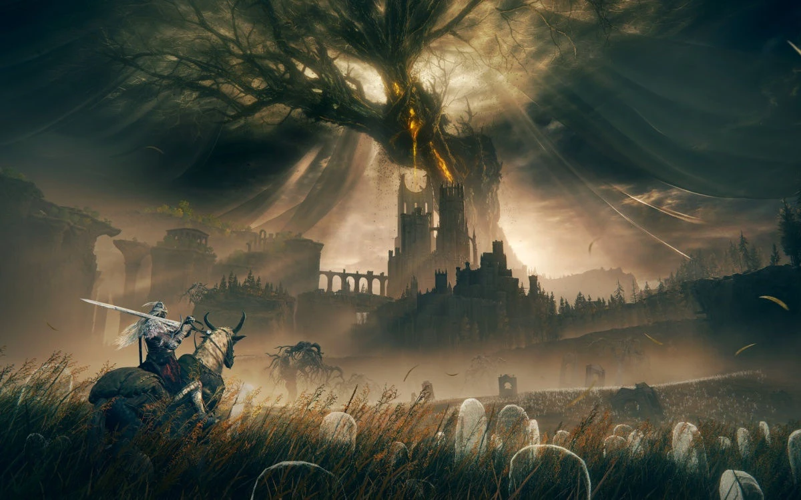

Destaques
Elden Ring: Shadow of the Erdtree deve ter entre 30 a 40 horas de conteúdo inédito
No X, usuário fez um compilado sobre as informações já divulgadas sobre a expansão
Postado 07 de Junho de 2024 Com algumas prévias de Elden Ring: Shadow of the Erdtree sendo divulgadas desde terça-feira (4), já é possível saber alguns detalhes importantes sobre a aguardada expansão. Entre elas, estão o número de chefes, novas armas e até mesmo a duração do jogo - que, claro, pode variar de acordo com o nível e a habilidade do jogador. A DLC chega em 21 de junho para PC, PlayStation 4, PlayStation 5, Xbox One e Xbox Series X|S...Leia mais
São Paulo sedia conferência de cibersegurança em setembro
A capital paulista se prepara para sediar a The Starti Conference 2024, uma das maiores conferências de cibersegurança e negócios do Brasil. O evento acontecerá nos dias 20 e 21 de setembro, contando com mais de 20 especialistas do mercado de segurança e privacidade para discutir os principais avanços em inteligência artificial (IA), novas tecnologias e cibersegurança no mundo dos negócios.
Postado 12 de Junho de 2024
Foto da ultima TSC.
A capital paulista se prepara para sediar a The Starti Conference 2024, uma das maiores conferências de cibersegurança e negócios do Brasil. O evento acontecerá nos dias 20 e 21 de setembro, contando com mais de 20 especialistas do mercado de segurança e privacidade para discutir os principais avanços em inteligência artificial (IA)...Leia mais
Postagens Recentes
Elden Ring: Shadow of the Erdtree deve ter entre 30 a 40 horas de conteúdo inédito
No X, usuário fez um compilado sobre as informações já divulgadas sobre a expansão
Leia maisGTA 6 será lançado em 2025, confirma Rockstar
O aguardado trailer do novo GTA foi revelado em dezembro do ano passado, trazendo um breve olhar para a sequência e muitas novidades instigantes que atiçaram o hype dos fãs.
Leia mais